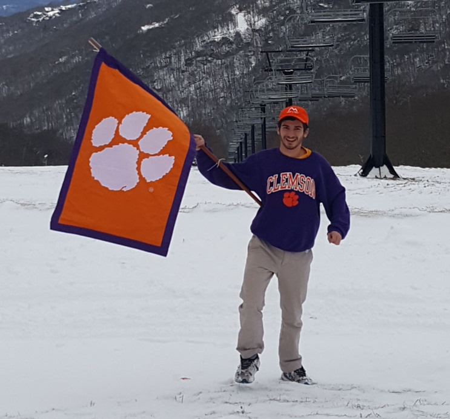
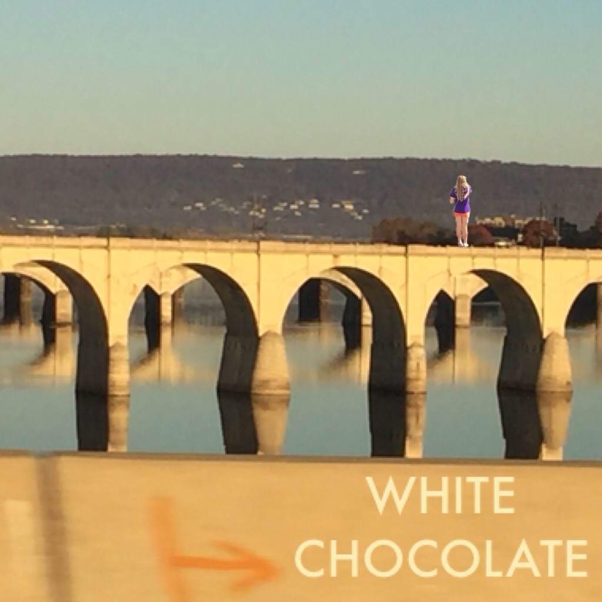
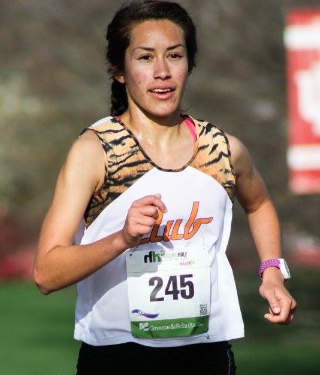
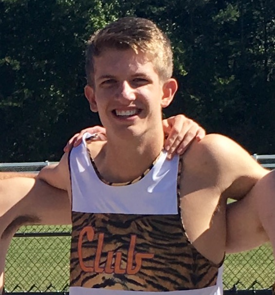
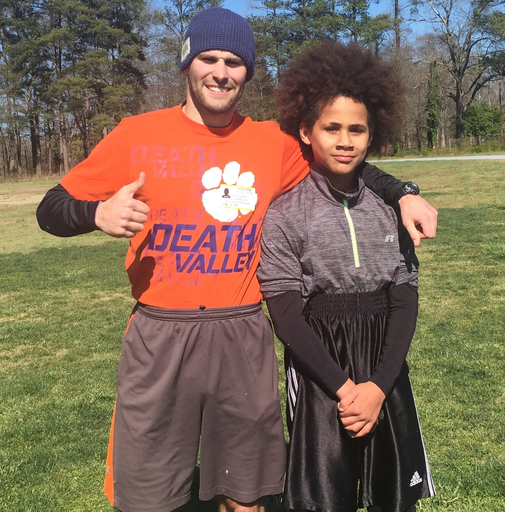
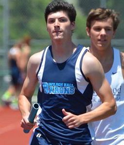
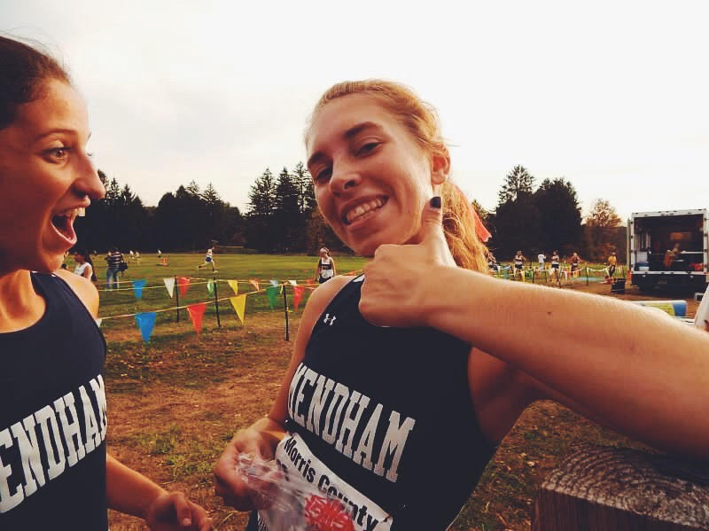
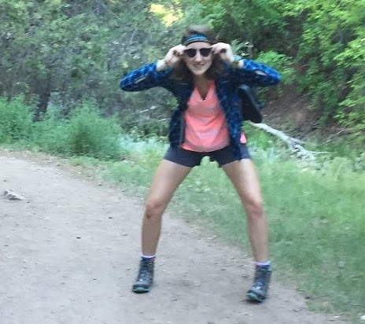

Current Members

2017 - 2018 Club Officers
President: Michael Holland

- Major: Civil Engineering
- Year: Junior
- Fav Thing About the Club: The service project at Pendleton, trips to Bristol, and the yee yeeees
- Fav Quote: "What a day!""
- Fav Shoe: Altra Provision 2.5s
Co-Vice President/Men's Captain: Matthew Justus

- Major: MicroBiology
- Year: Junior
- Fav Thing About the Club:Racing
- Fav Quote: "The battles that count aren't the ones for gold medals. The struggles withinyourself - - the invisible, inevitable battles inside all of us - - that's where it's at." - Jesse Owens
- Fav Shoe: Mizuno Wave Inspire
Co-Vice President/Women's Captain: Daria Yoder

- Major: Archi-torture
- Year: Sophomore
- Fav Thing About the Club: I found a group of people who also like running that I can call my family.
- Fav Quote:"A moment of pain is worth a lifetime of glory." -Louis Zamperini
- Fav Shoe: Saucony Ride
Secretary: Sydney Gilstrap

- Major: Nursing
- Year: Junior
- Fav Thing About the Club: Running with people.
- Fav Shoe: Adidas Boston Boost
Treasurer: Graves Littlejohn

- Major: Construction Science
- Year: Junior
- Fav Thing About the Club: Frisbee Friday
- Fav Quote:"Expect problems and eat them for breakfast." -Alfred A. Montapert
- Fav Shoe: Air Jordans
Fundraising/Social Chair 1: Nick Gladden

- Major: Biology
- Year: Graduate
- Fav Thing About the Club: Being the Grandpa
- Fav Quote:"Like a prune, you are not getting any better looking, but you are getting sweeter." -N. D. Stice
- Fav Shoe: Michael's Altras
Fundraising/Social Chair 2: Brayden Fidler

- Major: Computer Science
- Year: Sophomore
- Fav Thing About the Club: The Service Project at Townville Elementary
- Fav Quote:"I wish there was a way to know you're in the good ole days before you've actually left them" -Andy Bernard, The Office
- Fav Shoe: Brooks Launch 3
Community Outreach: Katie Rundzieher

- Major: Political Science
- Year: Sophomore
- Fav Thing About the Club: highest quality people around
- Fav Quote:“Tina you fat lard come get some dinner. Tina! Eat the FOOD!”-Napoleon Dynamite
- Fav Shoe: Saucony Omni
Community Outreach: Nicole Clamp
- Major: Graphic Communications
- Year: Sophomore
- Fav Thing About the Club: My favorite thing about running club is meeting people who slack off on running just as much as I do
- Fav Quote:"Dream. Believe. Achieve."
- Fav Shoe: Brooks (I don't really care what type I just love the brand)
WebMaster: Courtney Shearer

- Major: Computer Science
- Year: Junior
- Fav Thing About the Club: Palmetto 200
- Fav Quote:"Nothing splendid has ever been achieved except by those who dared believe that something inside them was superior to circumstance." Bruce Barton
- Fav Shoe: Hoka One One Cliftons